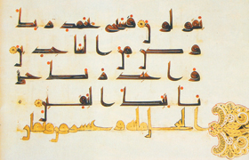

Lezione 6  islam
islam

Arabizzato: colui che ha accettato e assimilato la lingua e la cultura araba.
Arabo: la lingua araba. Abitante della penisola arabica.
Corano: libro sacro dell’islam, è un libro ispirato. Per i musulmani non è stato scritto da Maometto, ma rivelato da Dio, ed è considerato come la diretta e letterale trascrizione della parola di Dio. Il termine arabo da cui deriva, “Corano”, significa infatti “lettura”, “recitazione”. Il Corano è diviso in 114 capitoli, chiamati sure, disposti in ordine decrescente, dal più lungo al più breve.
Ègira: Il termine arabo significa letteralmente “rottura”, “separazione”, “emigrazione”. Nella tradizione musulmana indica il momento in cui – nel 622 – Maometto fuggì dalla Mecca per trasferirsi a Yatrib, che dopo pochi anni verrà chiamata Medina, “la città del profeta”.
L’Ègira segna l’inizio dell’era musulmana: da questa data i musulmani iniziano il computo del tempo.
islam: religione monoteista fondata da Maometto. Il termine arabo indica “sottomissione”, “assoluta dedizione alla volontà divina”.
Jihàd: in arabo significa “sforzo” ed è inteso come sforzo per avvicinarsi a Dio, designa la guerra santa. È uno degli obblighi religiosi più importanti. Lo sforzo principale che ogni musulmano deve compiere è lo sforzo quotidiano per il miglioramento di se stesso.
Questo è detto il “grande jihàd”, “grande guerra”, e concerne l’attività interiore.
Vi è poi il “piccolo jihàd”, “piccola guerra”, che concerne l’attività esteriore ed è la guerra contro i nemici esteriori. Comporta il ricorso alle armi per scopi difensivi ma non solo.
Maometto: Profeta dell’islam, vissuto tra il 570 circa e il 632.
Moschea: il luogo di culto in cui si recano a pregare i musulmani. Nella moschea avviene la preghiera comunitaria, guidata da un Imam. I fedeli vengono chiamati alla preghiera dal richiamo del Muezzin.
Musulmano / islamico: colui che segue la religione di Maometto, l’islam.
Sharìa: letteralmente “grande via”, “strada maestra”, la norma dettata da Dio al suo profeta Maometto. È l’insieme delle leggi e delle disposizioni che ogni musulmano deve seguire.
Sunna: letteralmente “forma, sentiero”. Indica l’insieme di tutti i detti e le notizie relativi alla vita del profeta Maometto, raccolti dalle generazioni a lui successive. Poiché Maometto è il modello di comportamento da seguire, l’insieme delle notizie che si hanno sulla sua vita e sulle sue usanze traccia il cammino, la tradizione da seguire.
Umma: la comunità dei credenti musulmani.